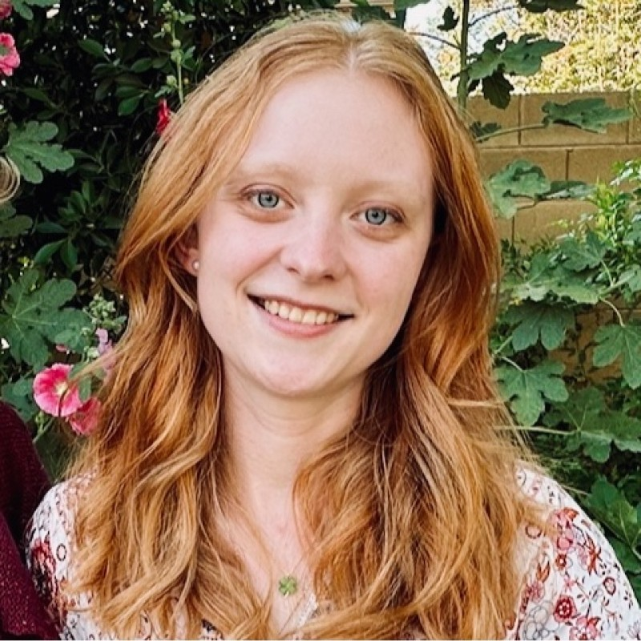

About AZEquiScope
This dashboard visualizes clinic need across Maricopa County using socioeconomic and health indicators.
Need Score combines standardized measures of: income (inverted), population density, chronic disease prevalence (CDC PLACES), provider availability (NPI Registry), and insurance coverage (CDC ACCESS2).
Need Score Calculation
The Need Score is calculated using the following formula:
Need Score = (Weight_Income * (1 - Income_Scaled)) +
(Weight_Population * Population_Scaled) +
(Weight_ChronicDisease * ChronicDisease_Scaled) +
(Weight_ProviderAccess * (1 - ProviderAccess_Scaled)) +
(Weight_InsuranceAccess * (1 - InsuranceAccess_Scaled))
Definitions:
- Income_Scaled: Standardized median household income, inverted so lower income indicates higher need.
- Population_Scaled: Standardized population density, where higher density indicates higher need.
- ChronicDisease_Scaled: Standardized prevalence of chronic diseases (e.g., diabetes, hypertension) from CDC PLACES data.
- ProviderAccess_Scaled: Standardized count of healthcare providers (individual and organizational) from the NPI Registry, inverted so fewer providers indicate higher need.
- InsuranceAccess_Scaled: Standardized percentage of uninsured individuals, inverted so lower insurance access indicates higher need.
All variables are standardized using min-max scaling to ensure values range from 0 to 1.
Created by Ainsley Atherton, Emma Stinson, & Unnati Agarwal · Arizona State University. View on GitHub
Meet the Developers

Ainsley Atherton
Ainsley Atherton is a Biomedical Informatics Ph.D. student and Graduate Teaching Assistant at Arizona State University with extensive experience in bioinformatics research, data integration, and computational modeling. Her work spans viral phylogeography, metagenomic data analysis, and healthcare data systems design, contributing to projects at the intersection of public health and informatics innovation.

Emma Stinson
Emma J. Stinson is a statistician at the National Institute of Diabetes and Digestive and Kidney Diseases (NIDDK) and a PhD student in Biomedical Informatics and Data Science at ASU, with a master’s in Biostatistics & Epidemiology. She specializes in advanced statistical modeling, reproducible analysis pipelines (R/SAS), and translational research on metabolic determinants of health, bringing strong expertise in study design, coding best practices, and mentorship to interdisciplinary teams.
Unnati Agarwal
Unnati Agarwal is a Research Assistant at Mayo Clinic and a Master’s candidate in Biomedical Informatics & Data Science at Arizona State University, with a Bachelor's in Technology in Biotechnology and hands-on experience in Medical image analysis, computational biology, and biomedical data analysis. She brings the knowledge in applied data analytics—skilled in PowerBI, SQL, Python, and reproducible workflows—focused on translating genomic and imaging data into actionable public-health and clinical insights.